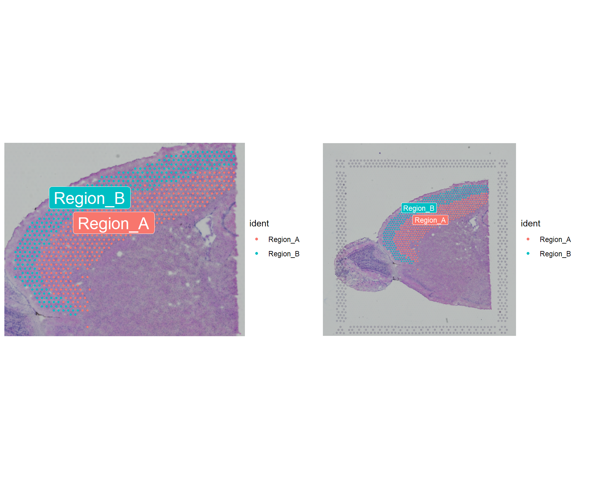
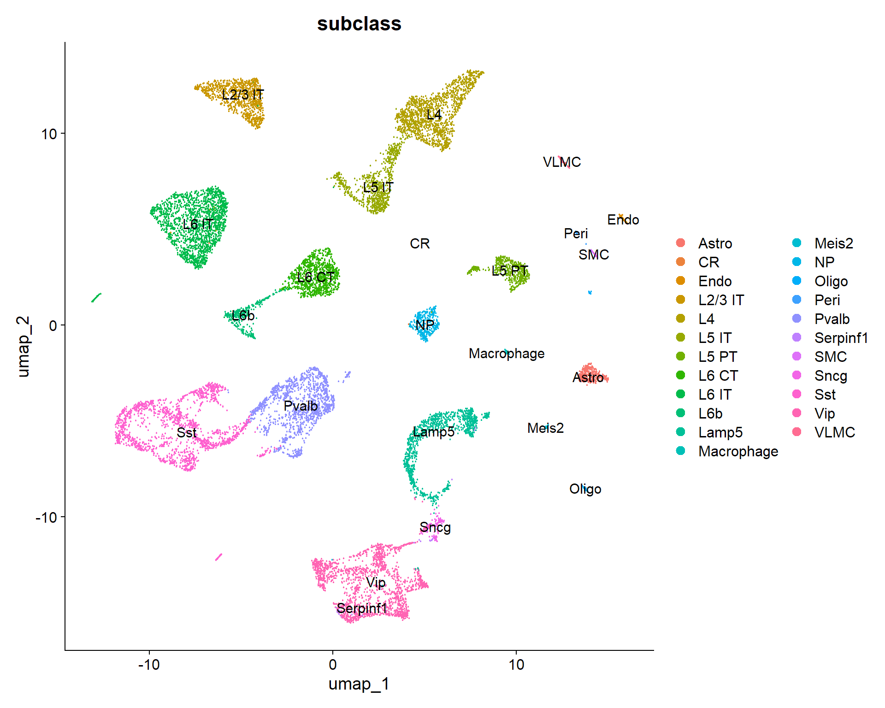
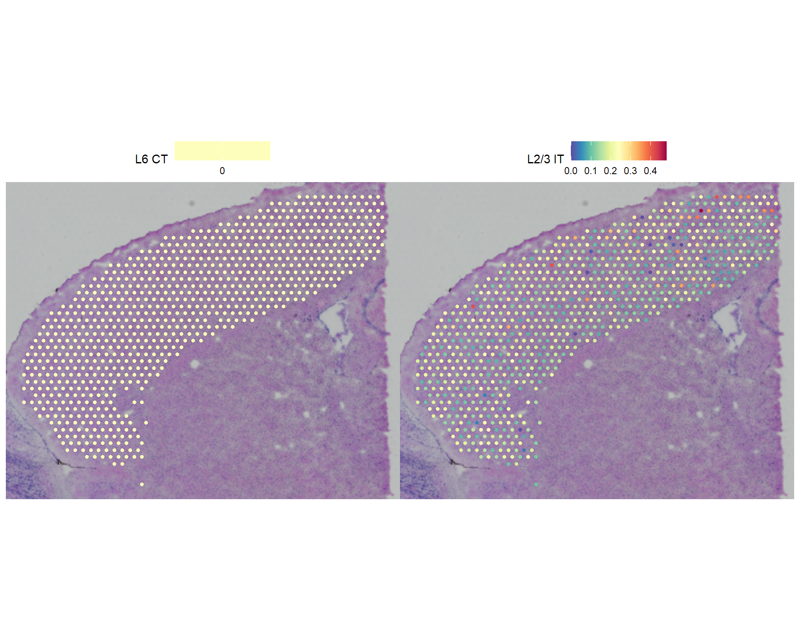
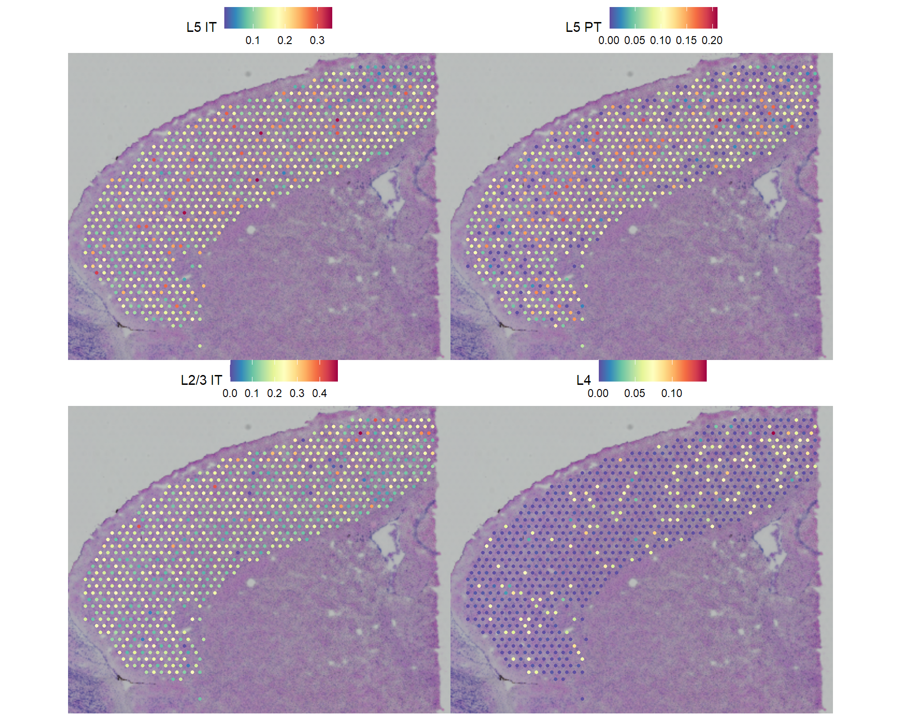
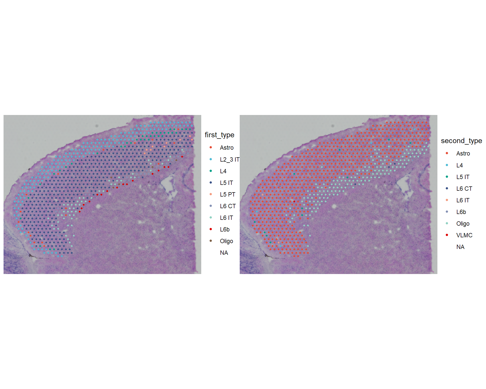

Chapter 3 Integration / Deconvolution using Single-Cell Data
Visium assays are around ~50um in size so spots can be classed as “bulk” genes.
Anchor-based Integration methods (Seurat v3 / v4) is the probabilistic transfer of cell type annotations from scRNA-seq to spatial data (different from deconvolution).
Matches expression profiles/ noise distribution between single-cell reference and spatial spots
- Finds anchors/correspondences between datasets
- Transfers labels from single cells to spatial spots
Key Assumption: - Each spatial spot is dominated by one cell type - Focus on identifying the primary cell type per spot
A. Key Differences Comparison
Click to show table
| Aspect | Integration | Deconvolution |
|---|---|---|
| Goal | Identify dominant cell type | Quantify all cell type proportions |
| Output | Discrete labels | Continuous proportions |
| Spot Assumption | One dominant cell type | Multiple mixed cell types |
| Computational Focus | Pattern matching | Mathematical decomposition |
| Biological Reality | Simplified view | More realistic for 55μm spots |
| Speed | Fast | Slower |
| Complexity | Simple | Complex |
| Quantitative Info | Low | High |
| Mixed Cell Handling | Poor | Excellent |
| Interpretation | Easy | Moderate |
| Best for Visium | Good for exploration | Better for analysis |
| Reference Requirements | Standard | High quality needed |
B. Cheatsheet: Spatial Platform-Specific Method Performance
Click to show table
Comprehensive Method Benchmarking: Deconvolution vs Integration vs Hybrid
| Platform | Resolution | Best Deconvolution | Best Integration | Best Hybrid | Recommended Approach |
|---|---|---|---|---|---|
| 10x Visium | 55μm | CARD, Cell2location, RCTD | Seurat v3/v4 anchors | Tangram | Deconvolution preferred |
| Slide-seqV2 | 10μm | Cell2location, RCTD | Seurat anchors, Harmony | Tangram, CytoSPACE | Deconvolution preferred |
| MERFISH | Single-cell | Cell2location, SpatialDecon | Seurat anchors | Tangram | Hybrid or Integration |
| seqFISH+ | Single-cell | CARD, DestVI | Seurat anchors | Tangram | Hybrid or Integration |
| Stereo-seq | 500nm-1μm | SpatialDecon, CARD | Seurat anchors | Tangram | Deconvolution preferred |
| Xenium | Subcellular | Cell2location | Seurat v4 anchors | Tangram, CytoSPACE | Hybrid recommended |
| CosMx | Single-cell | Cell2location | Seurat anchors | Tangram | Hybrid recommended |
Cheatsheet: Technology-Specific Deconvolution Performance Matrix
Click to show table
| Method | Visium | Slide-seqV2 | MERFISH | seqFISH+ | Stereo-seq |
|---|---|---|---|---|---|
| CARD | ⭐⭐⭐⭐⭐ | ⭐⭐⭐⭐ | ⭐⭐⭐ | ⭐⭐⭐⭐⭐ | ⭐⭐⭐⭐ |
| Cell2location | ⭐⭐⭐⭐⭐ | ⭐⭐⭐⭐⭐ | ⭐⭐⭐⭐⭐ | ⭐⭐⭐⭐ | ⭐⭐⭐⭐ |
| RCTD | ⭐⭐⭐⭐⭐ | ⭐⭐⭐⭐⭐ | ⭐⭐⭐⭐ | ⭐⭐⭐ | ⭐⭐⭐⭐ |
| Tangram | ⭐⭐⭐⭐ | ⭐⭐⭐⭐ | ⭐⭐⭐⭐⭐ | ⭐⭐⭐ | ⭐⭐⭐⭐⭐ |
| SpatialDWLS | ⭐⭐⭐⭐ | ⭐⭐⭐ | ⭐⭐ | ⭐⭐⭐⭐ | ⭐⭐⭐ |
| SpatialDecon | ⭐⭐⭐⭐ | ⭐⭐⭐⭐ | ⭐⭐⭐⭐⭐ | ⭐⭐⭐ | ⭐⭐⭐⭐⭐ |
| STdeconvolve | ⭐⭐⭐ | ⭐⭐⭐⭐⭐ | ⭐⭐⭐ | ⭐⭐ | ⭐⭐⭐ |
| DestVI | ⭐⭐⭐⭐ | ⭐⭐ | ⭐⭐⭐ | ⭐⭐⭐⭐ | ⭐⭐⭐ |
# Install packages if not already installed
# install.packages(c("Seurat", "Matrix", "ggplot2", "viridis", "patchwork", "dplyr"))
# install.packages(c("sp", "spdep", "spatstat", "pheatmap", "sctransform"))
# SeuratData::InstallData("stxBrain.SeuratData")
# devtools::install_github('satijalab/seurat-data')
# devtools::install_github("dmcable/spacexr", build_vignettes = FALSE)
# Load essential libraries
library(Seurat) # v5.3.1 - main spatial analysis package
library(ggplot2) # for visualization
library(dplyr) # for data manipulation
library(Matrix) # for sparse matrices
library(viridis) # for color palettes
library(patchwork) # for combining plots
library(spdep) # for spatial statistics
library(pheatmap) # for heatmaps
library(sctransform) # for SCTransform normalization
library(future) # for parallel processing
library(knitr) # for visualising tables
library(spacexr) # for Robust Cell Type Decomposition
library(ggsci) # distinct colors
# Increase the memory limit for parallel processing
options(future.globals.maxSize = 8000 * 1024^2) # Set to 4GB
# Set seed for reproducibility
set.seed(42)seurat_obj <- readRDS("cache/stxBrain_anterior2_processed_1.RDS")
seurat_obj <- UpdateSeuratObject(seurat_obj)3.0.1 1.1 Preparing Data
We want to use a cortical scRNA-seq dataset.
Best practise subset the spatial data to match the scRNA-Seq data (in this case the cortex)
3.0.2 1.2 Extract Cortical Region
# Subset to clusters of interest
cortex <- subset(seurat_obj, seurat_clusters %in% c(0,1))
# Extract and attach spatial coordinates from anterior1 image
centroids <- cortex[["anterior2"]]@boundaries$centroids
coords <- setNames(as.data.frame(centroids@coords), c("x", "y"))
rownames(coords) <- centroids@cells
cortex$x <- coords[colnames(cortex), "x"]
cortex$y <- coords[colnames(cortex), "y"]
# Perform spatial subsetting using image position Subset to upper right quadrant
cortex <- subset(cortex, y <= min(cortex$y ) | x >= max(cortex$x ), invert = TRUE)
# Visualize the subsetted data on full image vs cropped image
p1 <- SpatialDimPlot(cortex, crop = TRUE, label = TRUE)
p2 <- SpatialDimPlot(cortex, crop = FALSE, label = TRUE, pt.size.factor = 1, label.size = 3)
p1 + p2
# Best Practice: Renormalize spatial data
cortex <- SCTransform(cortex, assay = "Spatial", verbose = FALSE) %>%
RunPCA(verbose = FALSE)3.1 2 Anchor Based scRNA-Seq integration
Reference scRNA-seq dataset: taxonomy from the Allen Institute
| Source Data | Allen Brain Map |
| Species | Adult mouse |
| Tissue | Cortex |
| Platform | SMART-Seq2 |
| Integration Method | ‘anchor’-based (Seurat v3) |
#~~~~~~~~~~~~~~
# 2.1 Get Single Cell Data for Cortex ~~~~~~~~~~~~
#~~~~~~~~~~~~~~
if (!file.exists("cache/allen-brain-processed.RDS")) {
# Download File
if (!file.exists("allen_cortex.rds")) {
download.file(url = "https://www.dropbox.com/s/cuowvm4vrf65pvq/allen_cortex.rds?dl=1"
, destfile = "allen_cortex.rds",
, method = "auto"
, mode = "wb")
}
allen_reference <- readRDS("allen_cortex.rds")
allen_reference <- UpdateSeuratObject(allen_reference)
Idents(allen_reference) <- "subclass"
# Normalize Data
allen_reference <- SCTransform (
allen_reference
, ncells = 3000 # learns noise models on 3000 cells, whole dataset normalised with no loss in performance
, verbose = FALSE ) %>%
# PCA
RunPCA(verbose = FALSE) %>%
# UMAP
RunUMAP( dims = 1:30 )
saveRDS(allen_reference, "cache/allen-brain-processed.RDS")
} else {
allen_reference <- readRDS("cache/allen-brain-processed.RDS")
}# the annotation is stored in the 'subclass' column of object metadata
DimPlot(allen_reference, group.by = "subclass", label = TRUE)
Figure 3.1: UMAP Plot of reference scRNA-Seq data
3.1.1 2.2 Find and Transfer labels
How does the FindTransferAnchors function work?
Click to show table
Step 1: Feature Selection & Dimensional
Find intersect of most variable genes in scRNA-Seq and Spatial data
Dimension reduction (PCA / CCA)
Step 2: Mutual Nearest Neighbor (MNN). For each spot in Spatial data dataset:
Find k nearest neighbors in scRNA-Seq
For each neighbor, check if Spatial spot is also its neighbor
If mutual → potential “anchor pair”
Step 3: Anchor Filtering & Scoring
Distance threshold (closer = better)
Neighborhood overlap score
Local neighborhood structure consistency
anchors <- FindTransferAnchors(
reference = allen_reference # Reference dataset (scRNA-seq) to transfer annotations from
, query = cortex # Query dataset (spatial transcriptomics) to receive annotations
, normalization.method = "SCT" # Normalization method to make datasets comparable (SCTransform)
)
predictions.assay <- TransferData(
anchorset = anchors # Anchor pairs from FindTransferAnchors linking scRNA-Seq to spatial data
, refdata = allen_reference$subclass # Reference scRNA-Seq to transfer (cell type labels from metadata column)
, prediction.assay = TRUE # Return full prediction scores for all cell types per spot
, weight.reduction = cortex[["pca"]] # Dimensional reduction from query to weight anchor contributions
, dims = 1:30 # Dimensions to use for weighting anchor strength
, k.weight = 45 # Number of neighbors to consider when weighting anchors
)
cortex[["predictions"]] <- predictions.assay
tmp <- predictions.assay$data[,1:5]
tmp <- round(predictions.assay$data[,1:5], 1)
tmp <- tmp[rowSums(tmp) > 0,]
tmp[tmp==0] <-""
tmp %>% kable(caption="Cell probability scores for 5 spots")| AAACAGAGCGACTCCT-1 | AAACGTGTTCGCCCTA-1 | AAACTAACGTGGCGAC-1 | AAAGGGATGTAGCAAG-1 | AAAGGTAAGCTGTACC-1 | |
|---|---|---|---|---|---|
| L6 IT | 0.1 | ||||
| L2/3 IT | 0.1 | 0.2 | 0.1 | 0.1 | |
| L5 PT | 0.1 | 0.1 | 0.1 | ||
| L4 | 0.1 | ||||
| L5 IT | 0.1 | 0.2 | 0.1 | 0.2 | 0.1 |
| Oligo | 0.6 | 0.4 | 0.5 | 0.3 | 0.5 |
| Astro | 0.2 | 0.2 | 0.2 | 0.3 | |
| Macrophage | 0.1 | ||||
| max | 0.6 | 0.4 | 0.5 | 0.3 | 0.5 |
TransferData creates a probability matrix where each spatial spot gets a confidence score for every possible cell type, rather than just a single “best guess” assignment.
3.1.2 2.3 Visualise specific cell types
In this case: “L6 CT” cells that govern Feedback control to thalamus
DefaultAssay(cortex) <- "predictions"
SpatialFeaturePlot(cortex, features = c("L6 CT", "L2/3 IT"), pt.size.factor = 1.6, ncol = 2, crop = TRUE)
3.1.3 2.4 Find Spatially Variable Cell types
Spatial statistics can now be being used to find cell types that cluster together spatially, rather than finding spatially variable genes.
cortex <- FindSpatiallyVariableFeatures(
cortex
, assay = "predictions"
, selection.method = "moransi"
, features = rownames(cortex)
, r.metric = 5
, slot = "data"
)
top.clusters <- head(SpatiallyVariableFeatures(cortex, method = "moransi"), 4)
SpatialPlot(object = cortex, features = top.clusters, ncol = 2)
3.2 3 Spatial deconvolution using RCTD (Robust Cell Type Decomposition)
Publication: Cable et al., Nature Biotechnology 2022
Strengths:
- Handles differences between scRNA-seq and spatial data
- Recommended starting point by multiple benchmarking studies
- Good for large datasets (CPU efficient)
Here we reuse the Allen Reference Dataset
# ~~~~~~~~~~~~~~~~~~~~~~~~~~~~~~ #
# 3.1 Set up query and reference with the RCTD functions "Reference" & "SpatialRNA"
# ~~~~~~~~~~~~~~~~~~~~~~~~~~~~~~ #
if (!file.exists("cache/allen-brain-rctd-ref.RDS")) {
# Set up REFERENCE scRNA-Seq data
ref <- UpdateSeuratObject(allen_reference)
Idents(ref) <- "celltype"
# Clusters ~~~~~~
# Remove prohibited slash (/) from subclass names
ref$subclass_fixed <- as.factor(ref$subclass)
levels(ref$subclass_fixed) <- gsub("\\/", "_", levels(ref$subclass_fixed))
cluster <- as.factor(ref$subclass_fixed)
names(cluster) <- colnames(ref)
# Check and remove cell types with < 25 cells
cell_counts <- table(cluster)
print(cell_counts)
# Identify problematic cell types
low_count_types <- names(cell_counts)[cell_counts < 25]
cat("Cell types with < 25 cells:", paste(low_count_types, collapse = ", "), "\n")
keep_cells <- !cluster %in% low_count_types
cluster <- factor(cluster[keep_cells])
# Counts ~~~~~~
# Extract counts, clusters, UMI counts/spot to feed into Reference function
counts <- allen_reference[["RNA"]]$counts[, keep_cells]
nCount_UMI <- ref$nCount_RNA
names(nCount_UMI) <- colnames(ref)
nCount_UMI <- nCount_UMI[keep_cells]
reference <- Reference(counts # scRNA-seq counts
, cluster # predefined cell clusters
, nCount_UMI #library size
)
# Set up QUERY Spatial Data
counts <- cortex[["Spatial"]]$counts
coords <- GetTissueCoordinates(cortex)
colnames(coords) <- c("x", "y")
coords[is.na(colnames(coords))] <- NULL
# Create SpatialRNA object for the RCTD
query <- SpatialRNA(
coords # Spatial coordinates
, counts # Gene Count Matrix (Raw)
, colSums(counts) # Library size (Umi / spot)
)
saveRDS(reference, "cache/allen-brain-rctd-ref.RDS")
saveRDS(query, "cache/stxbrain-rctd-query.RDS")
} else {
reference <- readRDS("cache/allen-brain-rctd-ref.RDS")
query <- readRDS("cache/stxbrain-rctd-query.RDS")
} 3.2.1 3.1 Run RCTD
- Reference scRNA-Seq and query Spatial data are used to annotate the spatial dataset
- Cell type labels added to the query Spatial data.
- Note: RCTD has parallel processing options.
Click to show table
- Finds cell type markers using scRNA-seq
- Find cell type composition (cell proportions) of each spatial data spot
- Get weighted sums for (a) gene expression per cell type (b) cell proportion per spot
- Accounts for technical differences between scRNA-seq and spatial data
- Uses maximum likelihood estimation to find best-fitting proportions
- Classifies spots based on confidence
- “singlet”: >95% one cell type)
- “doublet”: mixture of 2 cell types
- “reject”: poor fit/ambiguous
##
## Astro Endo L2_3 IT L4 L5 IT L5 PT L6 CT
## 368 94 982 1401 880 544 960
## L6 IT L6b Lamp5 Macrophage Meis2 NP Oligo
## 1872 358 1122 51 45 362 91
## Peri Pvalb Serpinf1 SMC Sncg Sst Vip
## 32 1337 27 55 125 1741 1728
## VLMC
## 67RCTD <- run.RCTD(
RCTD # RCTD object containing spatial data and reference for deconvolution
, doublet_mode = "doublet" # Deconvolution mode allowing spots to contain 1-2 dominant cell types
)
# Add result to Seurat Object
cortex <- AddMetaData(
cortex
, metadata = RCTD@results$results_df
)
cat("RCTD metadata columns:\n") ## RCTD metadata columns:## [1] "orig.ident" "nCount_Spatial" "nFeature_Spatial" "slice"
## [5] "region" "spatial_x" "spatial_y" "percent.mt"
## [9] "nCount_SCT" "nFeature_SCT" "SCT_snn_res.0.8" "seurat_clusters"
## [13] "cluster_names" "x" "y" "spot_class"
## [17] "first_type" "second_type" "first_class" "second_class"
## [21] "min_score" "singlet_score" "conv_all" "conv_doublet"3.2.2 3.2 Plot the RCTD annotations.
In doublet mode you get:
- first_type: most dominant gene per spot
- second_type: second most dominant gene per spot
p1 <- SpatialDimPlot(cortex, group.by = "first_type") +
scale_fill_npg()
p2 <- SpatialDimPlot(cortex, group.by = "second_type")+
scale_fill_npg()
p1 | p2
3.2.3 Session Info
Click to show table
## R version 4.5.0 (2025-04-11 ucrt)
## Platform: x86_64-w64-mingw32/x64
## Running under: Windows 11 x64 (build 26200)
##
## Matrix products: default
## LAPACK version 3.12.1
##
## locale:
## [1] LC_COLLATE=English_United Kingdom.utf8
## [2] LC_CTYPE=English_United Kingdom.utf8
## [3] LC_MONETARY=English_United Kingdom.utf8
## [4] LC_NUMERIC=C
## [5] LC_TIME=English_United Kingdom.utf8
##
## time zone: Europe/London
## tzcode source: internal
##
## attached base packages:
## [1] stats graphics grDevices utils datasets methods base
##
## other attached packages:
## [1] ggsci_5.0.0 spacexr_2.2.1 knitr_1.51 future_1.70.0
## [5] sctransform_0.4.3 pheatmap_1.0.13 spdep_1.4-2 sf_1.1-1
## [9] spData_2.3.5 patchwork_1.3.2 viridis_0.6.5 viridisLite_0.4.3
## [13] Matrix_1.7-3 dplyr_1.2.0 ggplot2_4.0.2 Seurat_5.5.0
## [17] SeuratObject_5.4.0 sp_2.2-1
##
## loaded via a namespace (and not attached):
## [1] RColorBrewer_1.1-3 wk_0.9.5 rstudioapi_0.18.0
## [4] jsonlite_2.0.0 magrittr_2.0.4 spatstat.utils_3.2-3
## [7] farver_2.1.2 rmarkdown_2.30 vctrs_0.7.1
## [10] ROCR_1.0-12 spatstat.explore_3.8-0 htmltools_0.5.9
## [13] s2_1.1.9 sass_0.4.10 parallelly_1.46.1
## [16] KernSmooth_2.23-26 bslib_0.10.0 htmlwidgets_1.6.4
## [19] ica_1.0-3 plyr_1.8.9 plotly_4.12.0
## [22] zoo_1.8-15 cachem_1.1.0 igraph_2.3.1
## [25] iterators_1.0.14 mime_0.13 lifecycle_1.0.5
## [28] pkgconfig_2.0.3 R6_2.6.1 fastmap_1.2.0
## [31] fitdistrplus_1.2-6 shiny_1.13.0 digest_0.6.39
## [34] tensor_1.5.1 RSpectra_0.16-2 irlba_2.3.7
## [37] progressr_0.18.0 spatstat.sparse_3.2-0 httr_1.4.8
## [40] polyclip_1.10-7 abind_1.4-8 compiler_4.5.0
## [43] proxy_0.4-29 doParallel_1.0.17 withr_3.0.2
## [46] S7_0.2.1 DBI_1.3.0 fastDummies_1.7.6
## [49] MASS_7.3-65 classInt_0.4-11 tools_4.5.0
## [52] units_1.0-1 lmtest_0.9-40 otel_0.2.0
## [55] httpuv_1.6.17 future.apply_1.20.2 goftest_1.2-3
## [58] glue_1.8.0 nlme_3.1-168 promises_1.5.0
## [61] grid_4.5.0 Rtsne_0.17 cluster_2.1.8.1
## [64] reshape2_1.4.5 generics_0.1.4 gtable_0.3.6
## [67] spatstat.data_3.1-9 class_7.3-23 tidyr_1.3.2
## [70] data.table_1.18.2.1 spatstat.geom_3.8-1 RcppAnnoy_0.0.23
## [73] foreach_1.5.2 ggrepel_0.9.8 RANN_2.6.2
## [76] pillar_1.11.1 stringr_1.6.0 spam_2.11-3
## [79] RcppHNSW_0.6.0 later_1.4.8 splines_4.5.0
## [82] lattice_0.22-6 survival_3.8-3 deldir_2.0-4
## [85] tidyselect_1.2.1 miniUI_0.1.2 pbapply_1.7-4
## [88] gridExtra_2.3 bookdown_0.46 scattermore_1.2
## [91] xfun_0.56 matrixStats_1.5.0 stringi_1.8.7
## [94] lazyeval_0.2.3 yaml_2.3.12 boot_1.3-31
## [97] evaluate_1.0.5 codetools_0.2-20 tibble_3.3.1
## [100] cli_3.6.5 uwot_0.2.4 xtable_1.8-8
## [103] reticulate_1.46.0 jquerylib_0.1.4 dichromat_2.0-0.1
## [106] Rcpp_1.1.1 globals_0.19.1 spatstat.random_3.4-5
## [109] png_0.1-9 spatstat.univar_3.2-0 parallel_4.5.0
## [112] dotCall64_1.2 listenv_0.10.1 scales_1.4.0
## [115] ggridges_0.5.7 e1071_1.7-17 purrr_1.2.1
## [118] rlang_1.1.7 cowplot_1.2.0